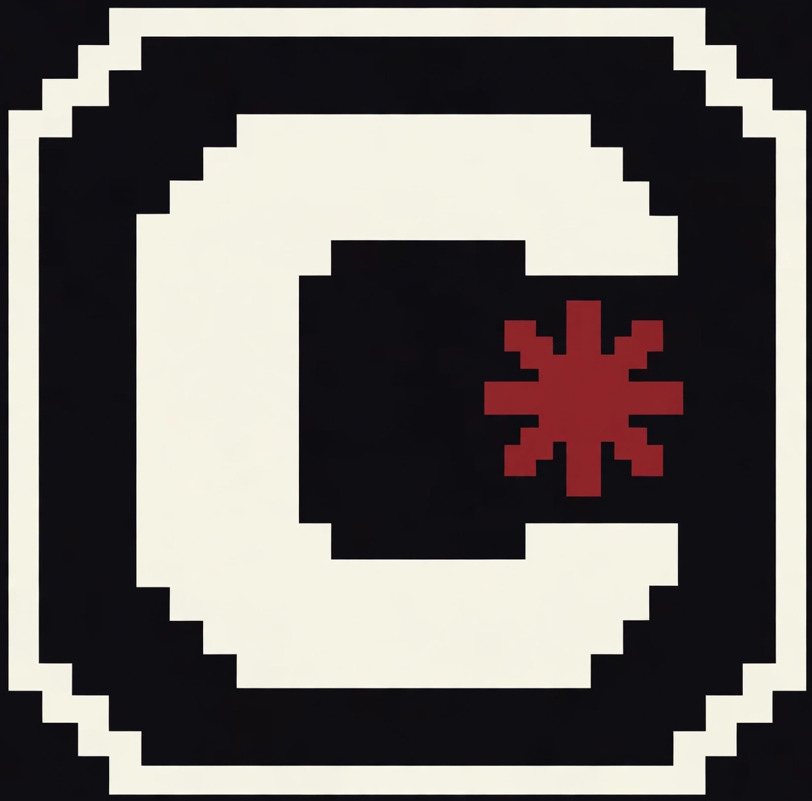

The mark
A colophon is the mark a printer sets at the end of a book — who made it, how it was made, and with what type. The finishing touch. These are our games, and this is our mark.
The games
-
Pulled Issues
A roguelike deckbuilder where every run is published: Golden Age comic heroes, choices that echo, and a book that remembers.
In development
-
RIOT
An overhead tactical RPG about one neighborhood and the authority that polices it — a party of tradespeople, led by whoever carries the banner.
In development
-
Letter Crunch
A word puzzler that teaches as it plays: every crunch comes with its definition.
In development
The blogs
Two dev blogs, written as the work happens.